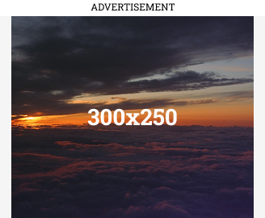
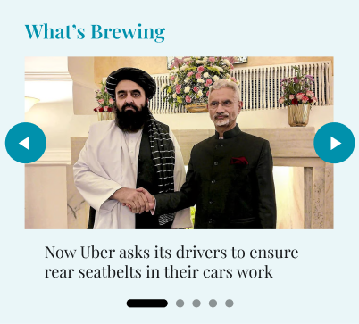

Dhaka Assembly Election 2025
District: Purvi Champaran
Seat Type: General
Last Updated 22 September 2022, 18:23 IST
Bihar Elections 2025 Results: Dhaka
WINNER: Dhirendra Pratap Singh
IND20,000 votes
Runner-up: Irshad Hussain
BJP 200 votes
MARGIN: 19,800 votes
The 2025 results for this constituency are in. The summary and margin details are displayed above. Use this section for quick context on how the outcome compares with 2010–2020 and what it means for the broader alliances.
Data sources include official ECI releases and curated archives. We will refine the summary as more granular booth-level data is published.

Bihar Assembly Elections Dhaka Past Results
2010
Pawan Kumar Jaiswal
IND
GAIN
2015
Faisal Rahman
RJD
GAIN
2020
Pawan Jaiswal
BJP
GAIN
2025
Winner
WP
← Timeline can be scrolled horizontally →
Bihar Elections 2020 Results
WINNER: Pawan Jaiswal
BJP99,792 votes
Runner-up: Faisal Rahman
RJD 89,678 votes
MARGIN: 10,114 votes
Bihar Elections 2015 Results
WINNER: Faisal Rahman
RJD87,458 votes
Runner-up: Pawan Kumar Jaiswal
BJP68,261 votes
MARGIN: 19,197 votes
Bihar Elections 2010 Results
WINNER: Pawan Kumar Jaiswal
IND48,100 votes
Runner-up: Faisal Rahman
RJD 46,451 votes
MARGIN: 1,649 votes
This page incorporates information from Wikipedia articles, available under the Creative Commons Attribution-ShareAlike 4.0 License, and data from the Election Commission of India (ECI). This page incorporates information from Wikipedia articles, available under the Creative Commons Attribution-ShareAlike 4.0 License

